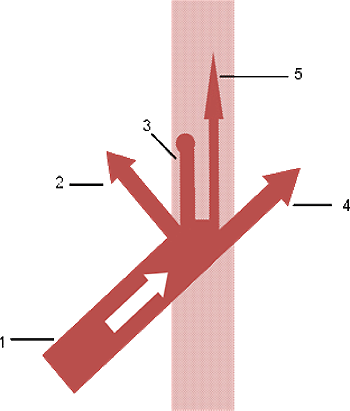
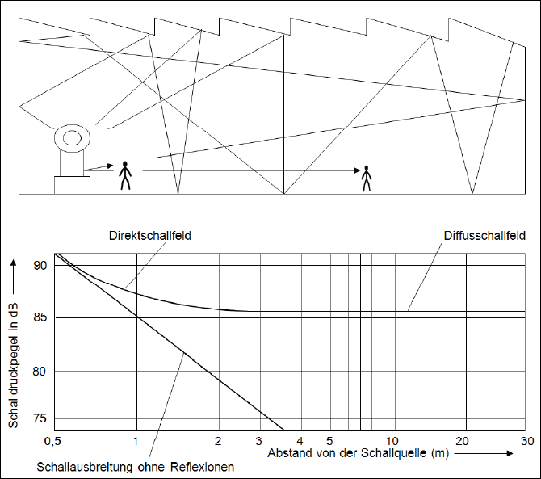
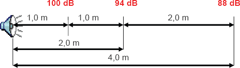

(1) Wenn die von Maschinen und anderen lärmerzeugenden Einrichtungen und Arbeitsverfahren erzeugte Schallenergie auf eine Wand oder Decke trifft, dringt nur ein geringer Teil der auftreffenden Energie durch solche räumliche Begrenzungsflächen hindurch (Transmission) oder gelangt durch Öffnungen (Tore, Fenster) ungehindert nach außen; ein weiterer Teil wird, abhängig vom Schallabsorptionsvermögen der Raumbegrenzungsflächen, in Wärme umgewandelt (Absorption). Der Restanteil wird in den Raum zurückgeworfen (Reflexion). Einbauten und Maschinen können als akustische Streukörper wirken und die Schallabsorption im Raum erhöhen.
 |
|
1 auffallender Schall 2 reflektierter Schall 3 in Wärme umgewandelter Schall (Luft- und Körperschallabsorption) 4 durchtretende Schallenergie 5 Körperschallfortleitung |
Abb. 1 Auftreffen der Schallenergie auf eine Wand
(2) Absorption und Transmission führen dazu, dass der Schallpegel im Raum trotz der ständig nachströmenden Schallenergie nicht über alle Grenzen wächst.
(3) Abbildung 2 gibt den idealisierten Verlauf des Schallpegels bei zunehmendem Abstand von einer Schallquelle in einem nahezu kubischen Raum (mit einem Raumvolumen unter ca. 10 000 m³) wieder, wenn die Raumbegrenzungsflächen kein allzu hohes Schallabsorptionsvermögen besitzen.

Abb. 2 Einteilung des Schallfeldes in Direktschallfeld und Diffusschallfeld bei halligem Raum
(4) Im idealisierten Fall sinkt der Schallpegel Lp mit zunehmendem Abstand von der Schallquelle innerhalb des Direktschallfeldes, wie z. B. bei ungehindertem, in alle Richtungen abstrahlendem, sich gleichmäßig ausbreitendem Schall im Freien, um 6 dB je Abstandsverdopplung (Abbildung 3). Im sich anschließenden Diffusschallfeld bleibt die Schallpegelhöhe unabhängig vom Abstand konstant. Neben der von der Schallquelle zugeführten Energie bestimmt die Energie des Reflexionsschalls die Pegelhöhe wesentlich mit.

Abb. 3 Schallpegelabnahme im Freien um 6 dB je Abstandsverdopplung
(5) Eine Erhöhung des Schallabsorptionsvermögens des Raumes vermindert im idealisierten Modellfall den Schallpegel allein im Diffusschallfeld, während der Pegelverlauf im Direktschallfeld unverändert bleibt. Übliche Arbeitsräume entsprechen diesem Modellfall meist schon wegen der geometrischen Abmessungen nicht. Dichte und Inhomogenität der Maschinenbelegung führen zu weiterer Veränderung der Voraussetzungen und zur Beeinflussung der Schallausbreitung. Im Direktschallfeld ist die Schallpegelabnahme pro Abstandsverdopplung DL2 geringer als 6 dB und auch im Diffusschallfeld bleibt der Schallpegel nicht konstant, sondern fällt um einen etwa konstanten Betrag pro Abstandsverdopplung ab. Die Höhe dieser Abnahme liegt für einen Raum, in dem der schallabsorbierenden Ausführung der Raumbegrenzungsflächen kein besonderes Augenmerk gewidmet worden ist, meist zwischen 2 und 3 dB pro Abstandsverdopplung.
(6) Schallabsorbierende Raumbegrenzungsflächen führen im Diffusschallfeld zu einer Abnahme pro Abstandsverdopplung von etwa 4 bis 4,5 dB. Im Direktschallfeld nähert sich die Pegelabnahme dem Wert 6 dB und damit der ungehinderten Schallausbreitung im Freien an.
(7) Der Stand der Technik kann als eingehalten gelten, wenn die Schallpegelabnahme DL2 im Abstandsbereich von 0,75 m bis 6 m in den Oktavbändern mit den Mittenfrequenzen von 500 bis 4 000 Hz mindestens 4 dB beträgt.